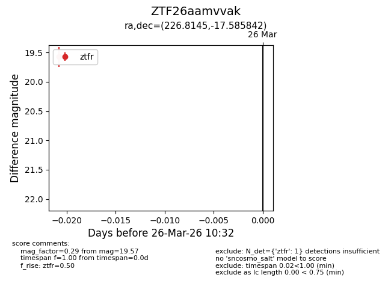
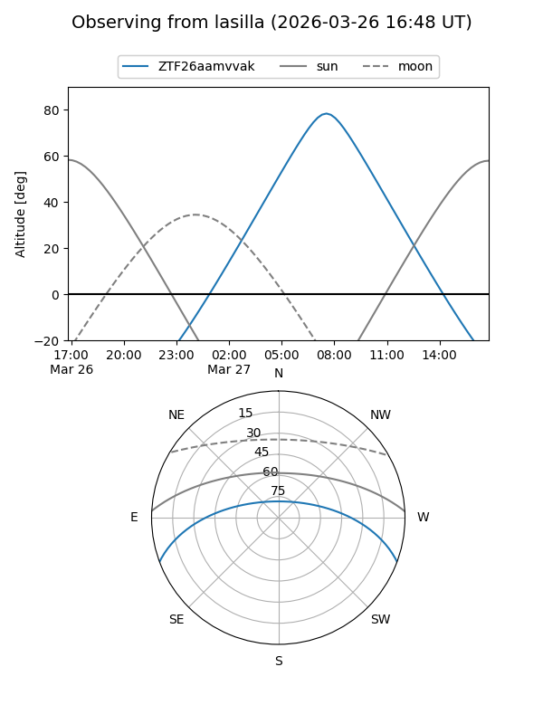
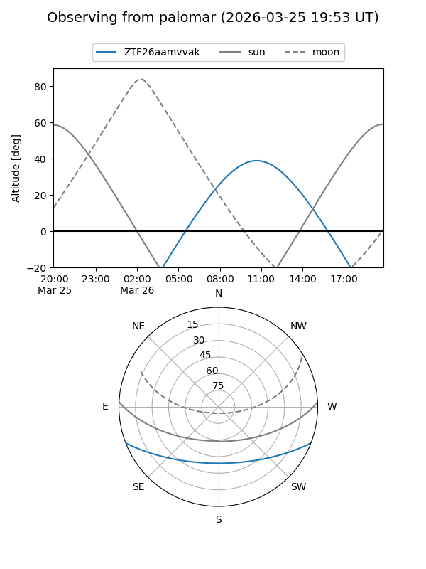

ZTF26aamvvak
Target ZTF26aamvvak at 2026-03-26 10:34
Aliases and brokers:
FINK: link
Lasair: link
ALeRCE: link
alt names
ZTF26aamvvak (ztf,fink_ztf)
Coordinates:
equatorial (ra, dec) = 226.8145,-17.58584
equatorial (HMS+DMS) = 15:07:15.47,-17:35:09.03
galactic (l, b) = (343.1592,+34.46865)
Flags:
Photometry:
last ztfr=19.57
1 ztfr detections
Lightcurve

Visibility


Additional plots